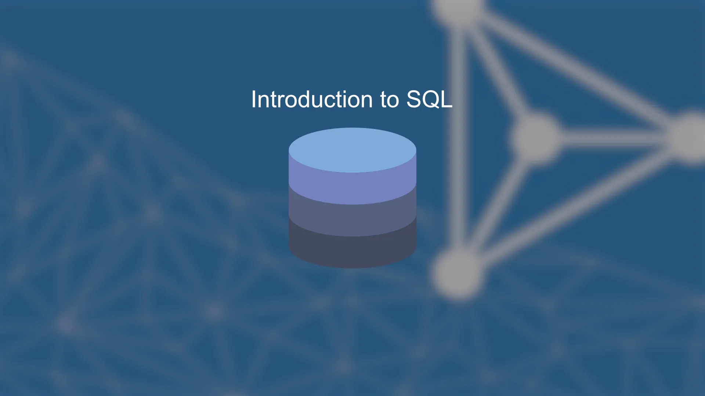

SQL Basics
SQL (Structured Query Language) is used to communicate with databases to create tables, insert data, and run queries.
Example of a simple SQL command:
CREATE TABLE Students (
ID INT PRIMARY KEY,
Name VARCHAR(50),
Major VARCHAR(30)
);
This SQL example creates a table named Students with three columns: an ID number that uniquely identifies each student, their Name, and their Major. SQL lets you define how data is structured and easily retrieve or modify it later using queries.
It’s one of the most essential tools for any data-driven application.
Source: Appsilon – Introduction to SQL